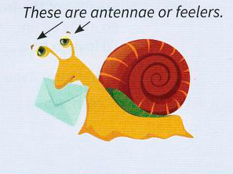

Animals 2: describing situations
Cats and dogs
In the 'situation' box, note how the 'if-clause' tells you whether the idiom is normally used with things (something), people (you) or with an impersonal construction such as there is.
| situation | idiom | meaning |
|---|---|---|
| If something | goes to the dogs | it goes from a good situation/condition to a bad one |
| If you | let the cat out of the bag | you accidentally tell people a secret / something you should not tell them |
| If you | put the cat among the pigeons | you create a crisis or a problematic situation |
| If there is | not (enough) room to swing a cat | there is very little room or space somewhere |
- The country has gone to the dogs since the new government took over.
- We didn't tell anyone the news, but she let the cat out of the bag and now everyone knows.
- Kim's report really put the cat among the pigeons. Now everyone's in a state of crisis.
- There's not enough room to swing a cat in our flat, so I don't think a party is a good idea.
Other animal-related expressions
In these dialogues, the second speaker uses an idiom to repeat and sum up the situation described by the first speaker.
Ryan:Everyone is so selfish. They would sell their own mothers to get what they want, and they don't care how much other people suffer.
Tania:Yes, it really is the law of the jungle. It's very depressing.
Becky:We shouldn't even think of discussing the voting system for the committee. It's very complicated and unfair in many respects, and could raise huge problems.
Ricky:I agree. It's a real can of worms. I think we should avoid discussing it.
Iris:If you ask me, it's a waste of time complaining to Robert. He doesn't take any notice, no matter how often you do it or no matter how angry you get.
Harry:Yes, it's like water off a duck's back.
Edward:We're all overworked and in a panic. We're trying to solve too many problems, and ending up not achieving anything!
Nancy:Yes, I agree. We're all just running round like headless chickens.
Note also:
- I don't use snail mail these days. E-mail's easier. [the post, often said humorously when contrasting with e-mail]
- I don't know if anyone would really want a job like this one, but we could put out feelers and see if anyone is interested. [make informal enquiries; talk to people unofficially]

When recording idioms in your vocabulary notebook, make notes of typical situations in which they can be used. For example: go to the dogs – typical situation: a restaurant that was very good before is very bad now.